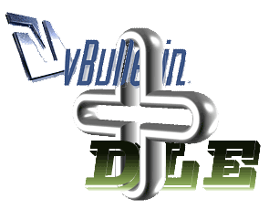

Основные возможности модуля:
-Форум может находиться на поддомене
-Базы форума и сайта могут различаться, если используется одна база то переключение не происходит
-Прификсы таблиц тоже могут быть как разными так и одинаковыми
-Каждую возможность можно выключить в админки
-Двухсторонняя регистрация
-Общая авторизация (даже если сайт и форум на разных доменах и серверах)
-Общий профиль
----Общие все стандартные поля скриптов
----Настраиваемые общие дополнительные поля профиля
----Общие аваторы
----Общая подпись пользователя
-Восстановление пароля в любом скрипте
-Общие личные сообщения (общие папки outbox и indox), включая все фишки форума, такие как:
----Отправка сообщение сразу нескольким пользователям
----Удаление сразу несколько сообщений одновременно
----Подтверждение о прочтении
----Также при прочтении сообщения на форуме оно автоматически помечается как прочтённое на сайте и наоборот.
-При редактировании/удалении/добавлении пользователей в админке DLE изменения происходят и на форуме, вплоть до изменения логина
-На сайт можно повесить ссылку "Обсудить на форуме" при переходе по которой автоматически создается(если нету) тема на форуме.
----Возле ссылки можно выводить количство постов обсуждения
----Для ссылки может использоваться ЧПУ
----Вид ссылки настраивается в админке
----Возможно для разных категорий на сайте назначать отдельные форумы.
-На сайте также может быть установлен блоки: "Последние сообщения с форума", "Именниники", "Кто на сайте". Блоки кэшируются.
-Все настройки производиться в админке сайта, включая вид отображения блоков, поста на форуме и ссылки на форум. Данные для блока "Кто на сайте беруться из базы сессий форума и отображают всех пользователей, которые находятся на сайте и на форуме следовательно используется один запрос
-Постепенный перес пользователей с сайта на форум и наоборот. То есть интеграцию можно ставить на сайт с пользователями и новым форумом, пользователи смогу авторизоваться в любом скрипте, а также и наоборот.
Системные требования:
DataLife Engine 7.3 и выше
vBulletin: 3.8.x - 4.x.x
MySQL: 4.1 и выше
PHP 5.0.0 и выше
ВНИМАНИЕ
Этот продукт подлежит лицензированию. Если вы не приобретали его, настоятельно рекомендуем приобрести лицензию на этот продукт, это возможно сделать на официальном сайте
http://www.kaliostro.net/.